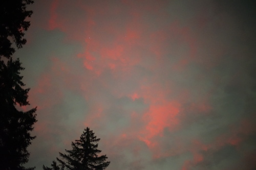
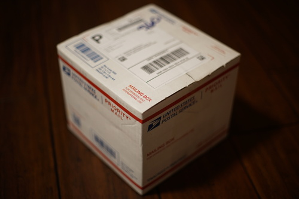
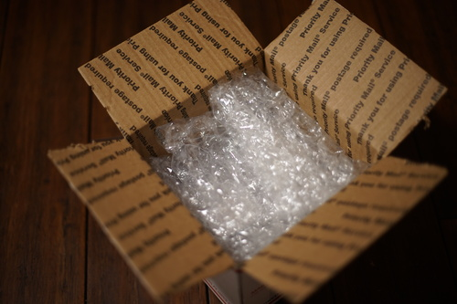
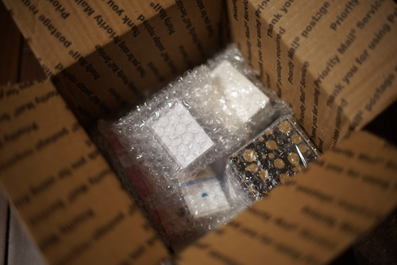
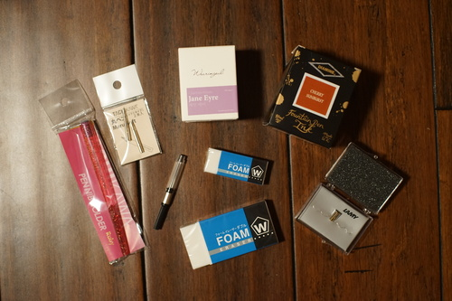
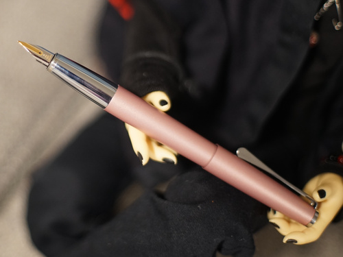
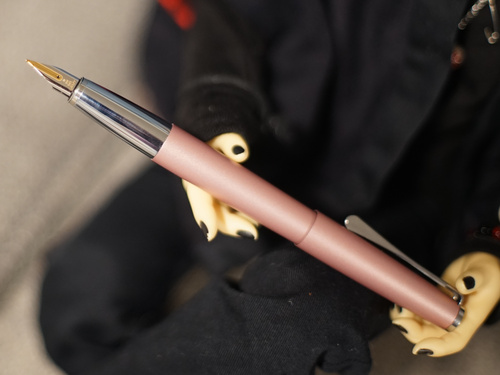
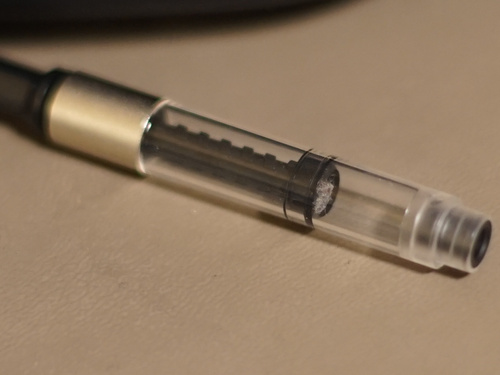
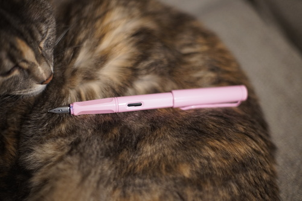
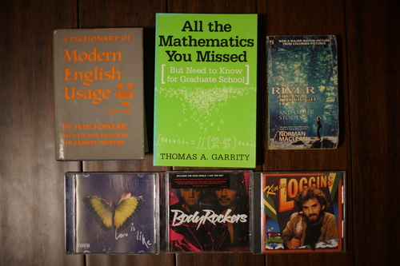

The aurora are afoot again. I've never seen them before this year and they just keep happening.
I went back in to grab my tripod and they were gone when I got back!
If you ignore my RSS updates, my Kumoricon report has been up for a bit!

Linus offered to buy me a Sailor after surviving his 6 month fountain pen buying ban. I do really want a Sailor, but the perfect Sailor just doesn't exist for me yet. If I had to choose one, I'd choose Pro Gear Slim in Dried Flowers Pink Rose. It's very cute, but I'm not in love. It also doesn't have a zoom nib as an option. I'm still holding out for the right pen! I can really only use so many of them.
I really like my LAMY Studio in rose! It has a very German design, which is kakkoii rather than kawaii, but it has benefits my Japanese pens don't. It's metal, hasn't broken on me, is pink, hasn't broken on me, is lovely, and hasn't broken on me. I like it so much that I wanted to upgrade it to a luxury pen by swapping to a gold nib after trying one at Oblation Papers earlier this month. Oblation does not sell gold replacement nibs, so we did an order at Jetpens for it.
I wasn't expecting a priority mail box! Edit: this was upgraded shipping and I wasn't aware of it.
 My biggest Jetpens complaint is that they use Cloudflare which often marks my browser as a bot and sometimes serves me a nice ban screen. Please! Calm down! I just want to look at pens!
Linus says the large one looks too unwieldy, so he bought me another smaller one. We'll see!!! I could never complain though. I love foam erasers.
The nib came in a little plastic box, which I assume was used by LAMY to ship a set of 5 replacement nibs and I was lucky enough to get the last one of the set? Or maybe they reuse the steel nib containers for the gold nib buyers? I've got 2 extra LAMY nibs now so the case will be used! I really want to try the LAMY "cursive" (漢) nib. Maybe they'll rerelease it someday.
 

While researching Diamine Honey Burst, I found out it was part of a Gibson Les Paul color collection.... Les Paul... CHERRY SUNBURST INK?!??! I need a Yui Hirasawa themed pen now oh no!!!!! If you know of a cherry sunburst stained maple fountain pen.... hit me up.
I was between two inks and found my pen was the prettiest shade of purple, so I went looking for an ink that matched the shade. I found a hint online, but I saw the swatch in person at Oblation, and it was not what I wanted. I looked through the purple swatches and Wearingeul Jane Eyre was exactly the shade I was looking for. The box and the printed ink swatch inside look nothing like the actual ink. We were actually going to order from Goulet Pens, but they didn't have this ink in stock. Sorry, John Goulet... At least his site never tells me I'm banned.
Back at Oblation Papers, I asked for a LAMY converter, and the employee asked me which pen it was for. I said Safari, and she showed me the two plastic boxes. She only had Z27 (black) in stock and the other box said the sold out converters were for the Safari! I was really confused because I didn't know why the converter I already have in my Studio wouldn't fit in my Safari as well. Linus found a guide on Goulet that said it would work, but I didn't have enough time so I didn't worry about it.
Jetpens sent me a dust bunny in the converter! I got it out after some trouble. I don't know if a fiber could enter the feed and clog it and I am not willing to find out.
I will now confirm that the Z27 converter does indeed fit in the Safari! Also doesn't have those annoying looking nubbies. Only the strongest LAMY fans will be able to see this Safari is now using a converter.

I went hard on mangaka studies during Inktober. During this time, I was constantly swapping outbetween the maru and G nibs. It made me not want to switch even when I knew I needed to! To solve this, I wanted another nib holder. Tachikawa definitely made an obnoxiously pink one this time! I saw soft maru nibs a while back was really curious to try them but hadn't actually gotten much experience with the regular maru nibs yet. Now that I have experience, I wanted to try them! I like them a lot. They flex a little, but are still very fine. Regular maru nibs do very little flexing.

Hard to believe Ryan missed any math! Yeah right!
For Ryan's dad
a whwhwhwhat??! A 2025 CD? What does music from 2025 even sound like?!
"The Baby Rockers? Why are they baby rockers? Wait... it says body rockers. Okay okay I'll try it"